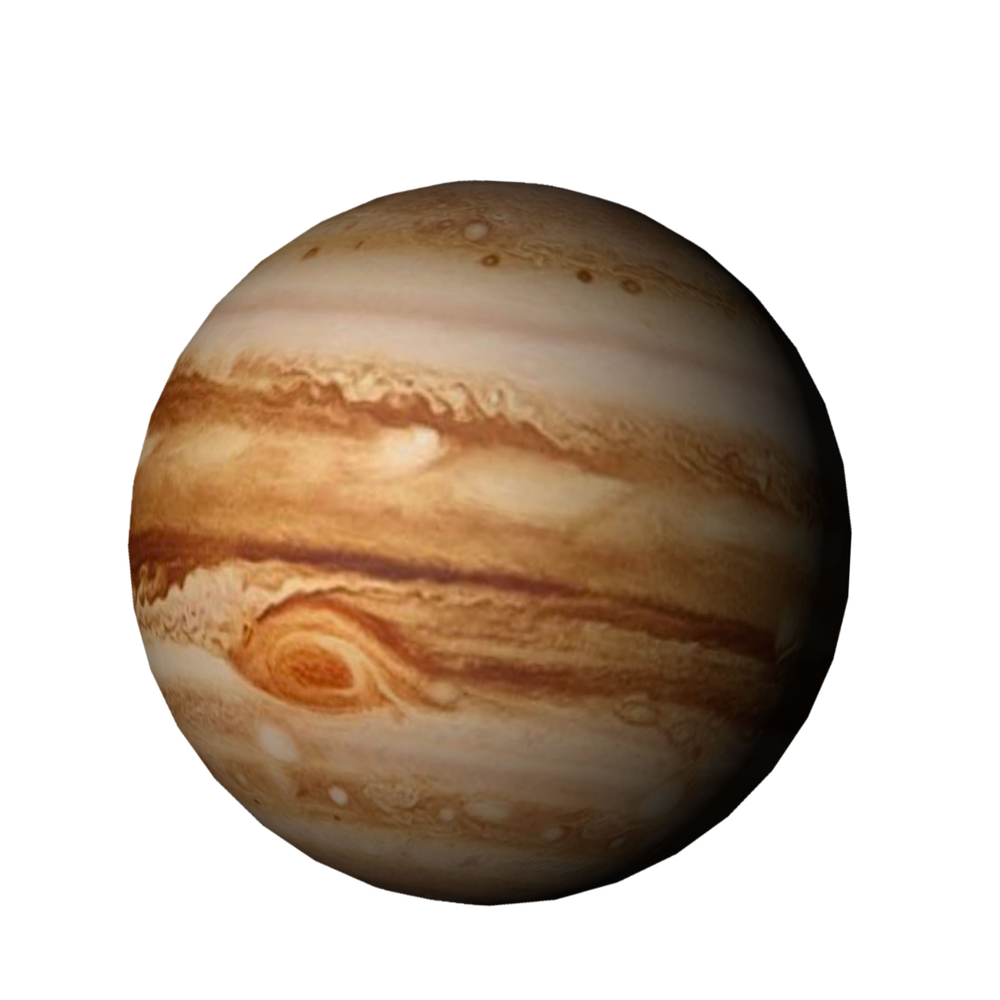
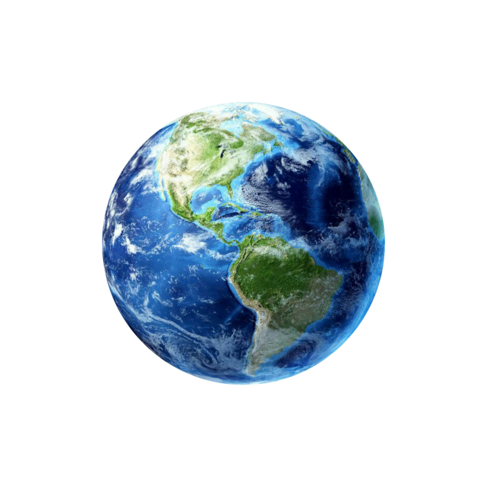
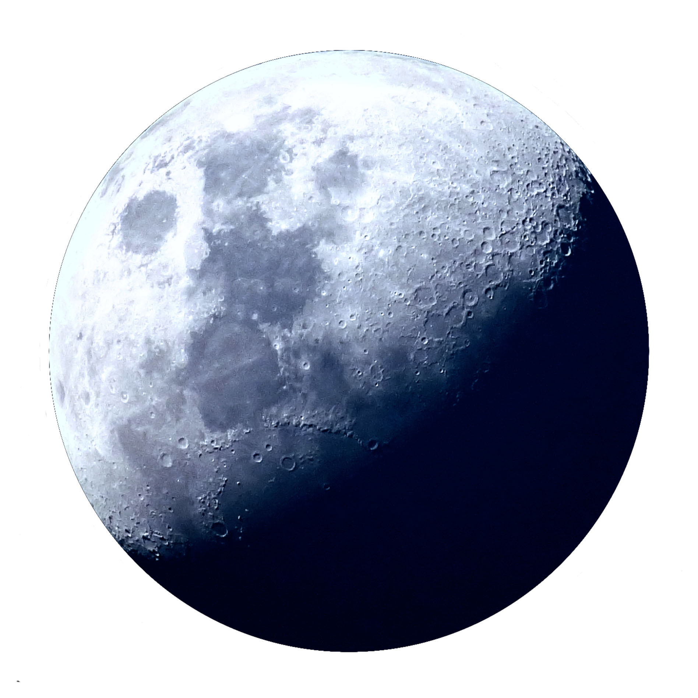
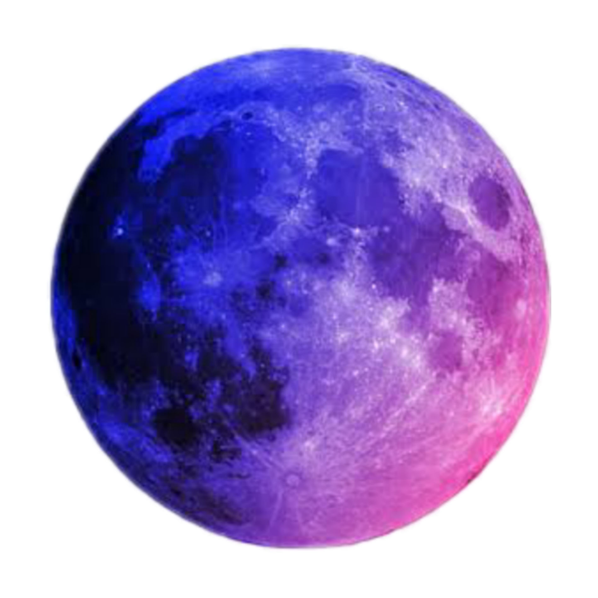
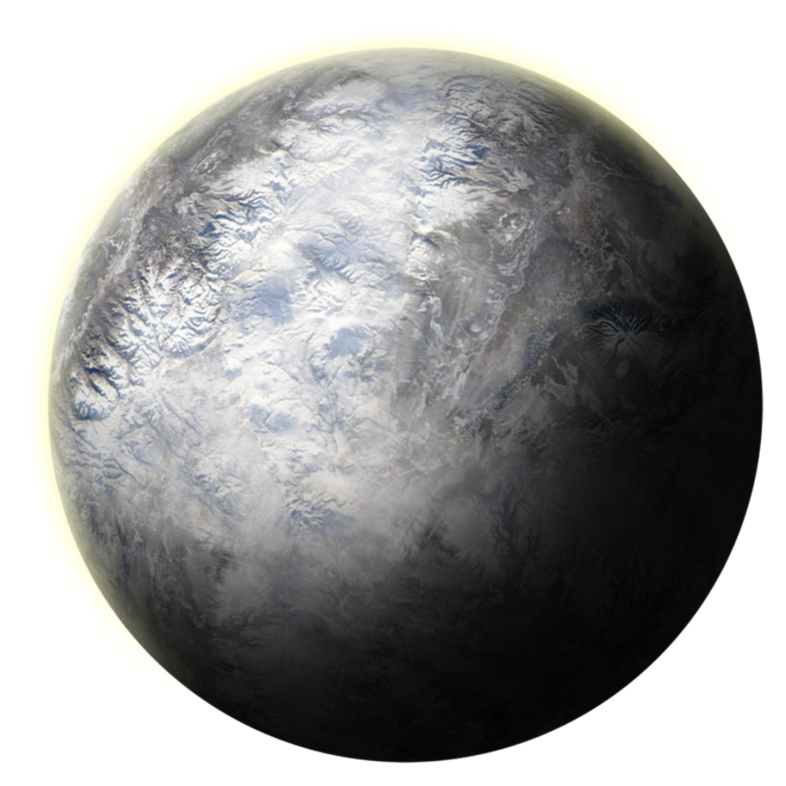

 <!DOCTYPE html>
 <html lang="en">
 <head>
  <meta charset="UTF-8">
  <title>Title</title>
 <style>
  /*div样式*/
  #main{
  width: auto;height: 1500px;margin: 0;background-color: black;
  }
 </style>
 </head>
 <body>
  <div id="main"></div>
  <script>
  //==========鼠标星球尾巴JS代码============
  
  //========函数:获取当前鼠标的坐标=========
  function getMousePosition(event) {
   var x = 0;//x坐标
   var y = 0;//y坐标
   //documentElement 返回一个文档的文档元素。
   doc = document.documentElement;
   //body 返回文档的body元素
   body = document.body;
   //解决兼容性
   if (!event) event = window.event;
   //解决鼠标滚轮滚动后与相对坐标的差值
   //pageYoffset是Netscape特有
   if (window.pageYoffset) {
   x = window.pageXOffset;
   y = window.pageYOffset;
   } else {//其他浏览器鼠标滚动
   x = (doc && doc.scrollLeft || body && body.scrollLeft || 0)
    - (doc && doc.clientLeft || body && body.clientLeft || 0);
   y = (doc && doc.scrollTop || body && body.scrollTop || 0)
    - (doc && doc.clientTop || body && body.clientTop || 0);
   }
   //得到的x加上当事件被触发时鼠标指针向对于浏览器页面（或客户区）的水平坐标
   x += event.clientX;
   //得到的x加上当事件被触发时鼠标指针向对于浏览器页面（或客户区）的垂直坐标
   y += event.clientY;
   //返回x和y
   return {'x': x, 'y': y};
  }
  //========函数:获取当前鼠标的坐标=========
  
  //=====生成从minNum到maxNum的随机数=====
  function randomNum(minNum,maxNum){
  switch(arguments.length){
   case 1:
   return parseInt(Math.random()*minNum+1,10);
   case 2:
   return parseInt(Math.random()*(maxNum-minNum+1)+minNum,10);
   default:
   return 0;
  }
  }
  //=====生成从minNum到maxNum的随机数======
  
  //======给整个文档绑定一个鼠标移动事件======
  document.onmousemove = function(event){
  
  // 在页面创建一个标签，（这里是创建一个自定义标签styleImg ）
  var styleImg = document.createElement("div");
  //获取随机数1-5,根据随机数来设置标签的样式
  var r = randomNum(1,5);
  switch (r) {
   case 1:
   //设置图片的路径,根据不同的路径就可以更改成不同的样式
   styleImg.innerHTML=""
   break;
   case 2:
   styleImg.innerHTML=""
   break;
   case 3:
   styleImg.innerHTML=""
   break;
   case 4:
   styleImg.innerHTML=""
   break;
   case 5:
   styleImg.innerHTML=""
   break;
   styleImg.innerHTML=""
   break;
   case 2:
   styleImg.innerHTML=""
   break;
   case 3:
   styleImg.innerHTML=""
   break;
   case 4:
   styleImg.innerHTML=""
   break;
   case 5:
   styleImg.innerHTML=""
   break;
  }
  // 由于要设置动画，设置left 和top，因此，必须要设置定位
  styleImg.style.position = 'absolute'
  // 设置标签的初始位置，即鼠标的当前位置
  var x = getMousePosition(event).x;
  var y = getMousePosition(event).y;
  // 设置styleImg的坐标
     styleImg.style.top = y +"px";
  styleImg.style.left = x + "px";
  //绑定testDiv为当前鼠标小尾巴生效的区域
  var testDiv = document.getElementById("main");
  // 将新建的标签加到页面的 body标签中
  testDiv.appendChild(styleImg);
  // 在文档中有超出的地方就会不显示，所以尽量绑定到页面的div中
  // 设置溢出隐藏，为了防止鼠标在移动的过程中会触发上下滚动条
  testDiv.style.overflow = 'hidden';
  //
     var count = 0;
     //setInterval() 方法可按照指定的周期（以毫秒计）来调用函数或计算表达式
  var time = setInterval(function(){
  // 设置定时器 ，让每一次生成的标签在指定的周期内修改相应的透明度
     count += 5;
   styleImg.style.opacity = (100-count)/100 ;
  }, 30)
  // setTimeout() 方法用于在指定的毫秒数后调用函数或计算表达式。
  // 设置延时定时器， 在一定的时间后清除上面的定时器，让创建的标签不再进行变化
  setTimeout(function(){
   // 使用 clearInterval() 来停止执行setInterval函数
   clearInterval(time);
   // 删除创建的标签
   testDiv.removeChild(styleImg);
  },250)
  }
  </script>
 </body>
 </html>